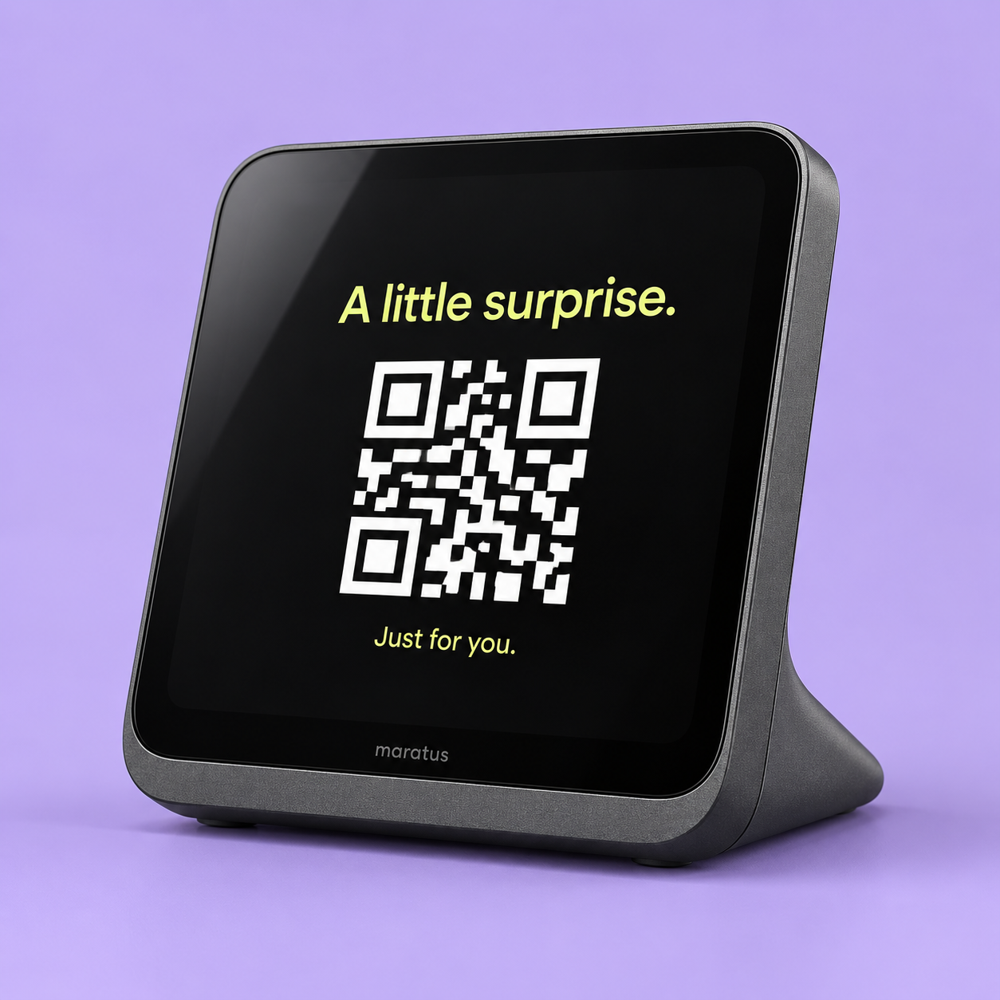

Make the screen yours.
Configure your logo, colours and layout in the management panel.
Send a link from your business software.
Maratus shows a QR code at the counter.
Your customer scans it. It's on their phone.

Your brand between visits.
The right link when it matters.
A campaign for this customer. A surprise for your 10,000th visitor. Or an idea nobody has tried yet. Your business decides what to share and when.
Your business hosts the content. Maratus puts the link where your customer can reach it.
Your POS or other software supplies a URL for this customer interaction.
Maratus isn't a fixed menu of use cases. If your experience has a link, your system can put it in front of the right customer.
Your system chooses a campaign for this customer and sends its link to Maratus. The screen gives them a way to open it, right there at the counter.
your-business.com/offer/for-youYour software handles the campaign rules, customer selection and rewards. Maratus delivers the link at the counter. Receipts, warranties, menus and loyalty pages are just a few of the possibilities.
The screen doesn't disappear between customers. Give it your colours, your logo and something useful to say.
Talk about your setupConfigure your logo, colours and layout in the management panel.
Pin a menu, Wi-Fi link or campaign between interactions.
Manage stores and devices from one place, with pinned experiences at device, store or organization level.
Your business creates and hosts the experience — whether it is a document, a campaign, a gift or something entirely your own.
Maratus presents a QR code on the customer-facing screen.
The customer's browser goes to your URL. Your system controls access to the content.
No. Receipts, menus and loyalty pages are examples, not a feature limit. Your business can link to a personalised campaign, a surprise reward, an invitation or another web experience it creates. Your software decides the rules; Maratus presents the link.
Yes. Pinned experiences can be set for a device, a store or the organization. They remain available until changed.
Your system calls the Maratus API with a device ID and a link. The implementation work depends on your POS or other software; we can discuss it during the pilot.
The trigger API rejects the request when the device is reported offline or paused, so your integration can handle the failure.
Tell us what you would love to happen
when a customer reaches your counter.